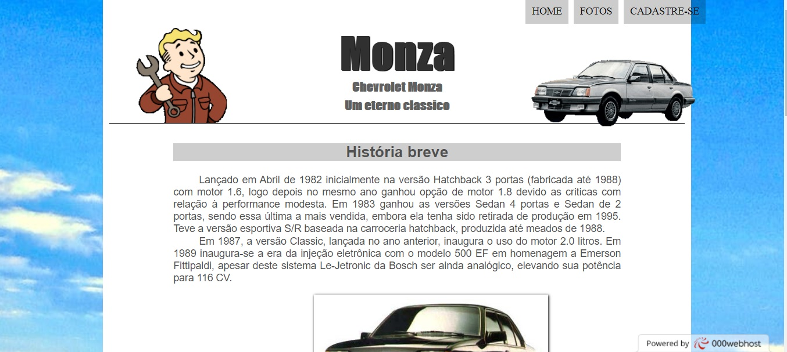
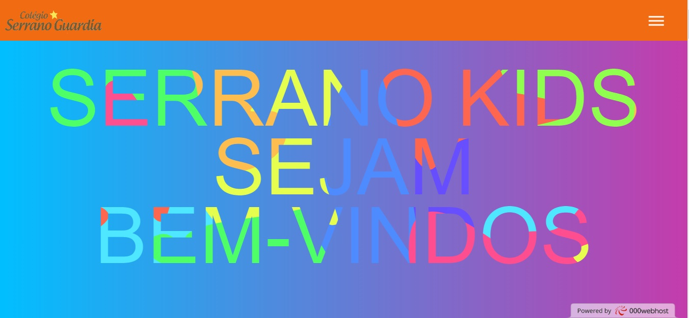

Criado por Samuel Chaves, uma breve descrição: Lançado em Abril de 1982 inicialmente na versão Hatchback 3 portas (fabricada até 1988) com motor 1.6, logo depois no mesmo ano ganhou opção de motor 1.8 devido as criticas com relação à performance modesta. Em 1983 ganhou as versões Sedan 4 portas e Sedan de 2 portas, sendo essa última a mais vendida, embora ela tenha sido retirada de produção em 1995. Teve a versão esportiva S/R baseada na carroceria hatchback, produzida até meados de 1988. Em 1987, a versão Classic, lançada no ano anterior, inaugura o uso do motor 2.0 litros. Em 1989 inaugura-se a era da injeção eletrônica com o modelo 500 EF em homenagem a Emerson Fittipaldi, apesar deste sistema Le-Jetronic da Bosch ser ainda analógico, elevando sua potência para 116 CV.


Projeto pedagógico da Escola Serrano Guardia
Criado por Lucas Salles, uma breve descriação: A prática pedagógica do Colégio Serrano Guardia investe, em especial, no lúdico, procurando contribuir para que o aluno: - Tenha multiplicidade de experiências afetivas e estéticas necessárias ao desenvolvimento harmonioso da personalidade. - Desenvolva uma imagem positiva de si, atuando com iniciativa e de forma cada vez mais independente, a partir da confiança em suas capacidades e da percepção de suas limitações. - Descubra e conheça progressivamente seu próprio corpo, suas potencialidades e seus limites, desenvolvendo e valorizando hábitos de cuidado com a própria saúde e bem-estar. - Estabeleça vínculos afetivos e de troca, fortalecendo sua autoestima, contribuindo no desenvolvimento e ampliação de comunicação e interação social. - Estabeleça e amplie cada vez mais relações sociais maduras e responsáveis, aprendendo a articular seus interesses e pontos de vista, respeitando a diversidade e desenvolvendo atitudes colaborativas.
Site de divulgação do Google Glass
Criado por Samuel Chaves, O Google Glass é um acessório em forma de óculos que possibilita a interação dos usuários com diversos conteúdos em realidade aumentada. Também chamado de Project Glass, o eletrônico é capaz de tirar fotos a partir de comandos de voz, enviar mensagens instantâneas e realizar vídeoconferências. Seu lançamento está previsto para 2014, e seu preço deve ser de US$ 1,5 mil. Atualmente o Google Glass encontra-se em fase de testes e já possui um vídeo totalmente gravado com o dispositivo. Além disso, a companhia de buscas registrou novas patentes anti-furto e de desbloqueio de tela para o acessório.